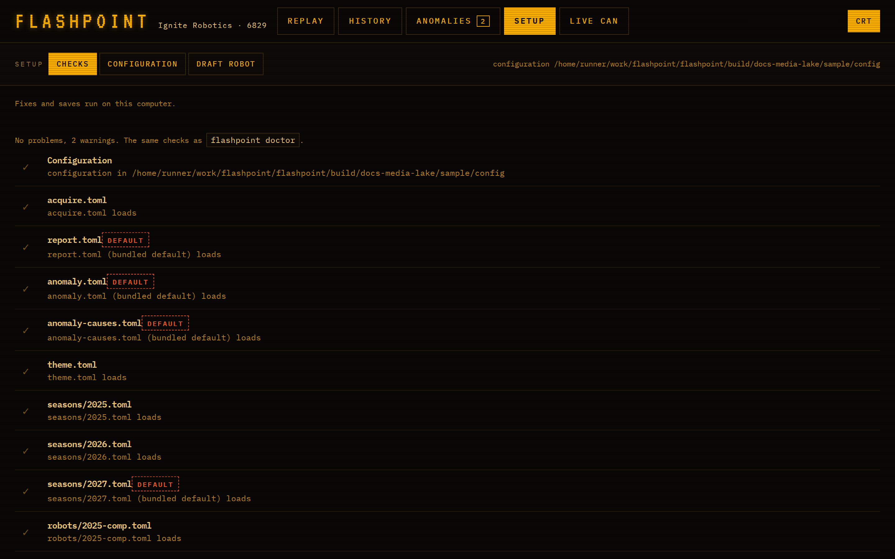

View: Setup¶
Setup shows what flashpoint doctor checks, with a button for the problems Flashpoint can fix, and your whole configuration, which you can change here without editing files. It also drafts a robot file from an imported log. It needs flashpoint serve, and fixes and saves run only on the laptop running it.

Layout¶
The band at the top has three tabs under SETUP: CHECKS, CONFIGURATION and DRAFT ROBOT. On the right it shows the configuration folder ("configuration folder"). Under the band, a line says whether this page can change anything:
- "Fixes and saves run on this computer."
- "Read-only: this app is shared on the network (or not opened on the computer running it). Run the commands shown on that computer."
The tab is in the address (#view=setup&tab=draft), so a link can open one. The SETUP tab in the navigation shows a ! badge, on every view, while the lake's backup is overdue (overdue_h in acquire.toml). The backup check on CHECKS says why.
CHECKS¶
The first line counts the results, such as "1 problem, 2 warnings. The same checks as flashpoint doctor." ("No problems" when there are none). Then one line per check, with its name and message:
| Mark | Status |
|---|---|
| ✓ | OK |
| ! | Warning |
| ✕ | Problem. doctor exits 1 while any problem remains |
| – | Doesn't apply on this computer, such as the acquire service on macOS |
A settings file that is still the copy bundled with Flashpoint is marked DEFAULT. The CLI reference lists every check.
A warning or problem shows how to fix it. For the problems Flashpoint can fix, that's a button:
| Button | What it does | Asks for |
|---|---|---|
| Create configuration | Writes the config folder, as flashpoint init does |
TEAM (number) and LAKE FOLDER (empty: the default lake folder) |
| Download owlet | Downloads and verifies owlet, CTRE's hoot converter, for each hoot format the lake has (or the newest, before the first import) | |
| Set AdvantageScope path | Sets path under [advantagescope] in report.toml |
ADVANTAGESCOPE PATH |
| Install the acquire service | Installs flashpoint acquire --watch as a background service (Linux and Windows) |
|
| Start the acquire service | Starts the installed service (Linux and Windows) |
After a fix, the checks run again and the line under the count says what was done and which files changed, or "Not fixed:" and the reason. Anything without a button shows the command or page to use instead.
CONFIGURATION¶
Every section shows the file it comes from. DEFAULT marks a file that ships with Flashpoint; saving it writes your own copy into the config folder. A file that doesn't load shows its error in place of its values.
| Section | File | What you can change |
|---|---|---|
| TEAM AND CONNECTION | acquire.toml | TEAM NUMBER, LAKE FOLDER, and ROBOT ADDRESSES (COMMA-SEPARATED; EMPTY: FROM THE TEAM). "Acquire tries:" lists the addresses in use |
| APPEARANCE | theme.toml | The team name and colours (below) |
| ROBOTS | robots/*.toml | Per robot file: its SLOTS (SLOT, BUS, MODEL, CAN ID, SUBSYSTEM, ROLE), BUSES (NAME (ROBOT CODE), HOOT BUS) and SIGNALS (folded, with its count). A line above them gives the season, project, and the counts |
| THRESHOLDS | report.toml and anomaly.toml | Every key, grouped by table, such as [thresholds] or [baseline] |
| UNITS | units/units-seed.csv | Every CTRE device the team owns, by serial |
In a table, + ADD adds a row and ✕ removes one. A slot with no subsystem is marked UNNAMED; that's allowed, and you can name it later. With no robot file yet: "No robot files yet. Draft one from a log in the DRAFT ROBOT tab."
SAVE¶
Each section has its own SAVE. A save:
- is checked with the same rules as loading the file, and refused with the same message if something is wrong, such as two slots with the same CAN id, or a signal under a root the season doesn't have;
- is refused if the file changed on disk since you opened it: "file changed on disk since it was loaded; reload and redo the edit";
- keeps comments and the order of everything you didn't change, and puts the previous version in
.backups/in the config folder (the last 20 of each file); - never changes the lake.
After a save the section says "Saved file. Next:" and what to do for the change to take effect:
| File | Next |
|---|---|
acquire.toml |
"a running acquire service picks this up after a restart" |
| A robot file | "flashpoint derive" |
report.toml |
"flashpoint report" |
anomaly.toml |
"flashpoint detect" |
| The units list | "nothing until the next derive (flashpoint derive)" |
theme.toml |
"every view, on its next page load (reload the page)" |
A refused save says "Not saved:" and the reason.
Team name and colours¶
TEAM NAME AND COLOURS sets what the header shows and the app's colours (Set the team name and colours):
- TEAM NAME (HEADER, AT MOST 40 CHARACTERS);
- TEAM NUMBER (EMPTY: FROM ACQUIRE.TOML);
- COLOURS: a preset palette, or "custom colours", which adds PRIMARY, BACKGROUND (EMPTY: DEFAULT) and WARNING (EMPTY: AUTOMATIC), each as
#RRGGBBtext with a colour picker beside it.
The preview box under them redraws in the chosen colours: a header, a small chart, text and a warning. The rest of the app keeps the saved colours until you save and reload. Under the preview:
- "✓ Readable: every text shade has at least 4.5:1 contrast on every surface, and the warning colour stands apart from the primary.";
- or "Not readable, so it can't be saved:" with each failure, and a button for each colour to change, USE PRIMARY or USE WARNING followed by the nearest colour that passes, which puts it in the field;
- or "Enter each colour as #RRGGBB, such as #00A3E0." while a colour isn't valid.
If theme.toml doesn't load, the section shows the error and "The app uses the default colours and no name until this is fixed."
DRAFT ROBOT¶
Use this for a new robot, for hoot-only logs, or after --no-robot-draft (your first import usually drafts the robot for you). See Set up a robot file.
- Pick an imported log in the list. Each entry is its match key (or file name) and how many hoots it has, or "no hoots".
- Press DRAFT FROM THIS LOG. Every CAN device in its hoots becomes a slot. The line above the table says how many devices, the season and project, whether serials came from a CAN inventory ("serials from the CAN inventory", or "no CAN inventory in this log (no serials)", CAN inventory) and whether bus names did ("bus names from the robot code", or "no bus names logged", CAN bus status).
- Check ROBOT ID, and fill in each slot's SUBSYSTEM and ROLE now or later. SLOT can be renamed; BUS, MODEL, CAN ID and SERIAL come from the log. ✕ drops a slot.
- Press SAVE ROBOT. Every slot needs an id: "Give every slot an id first: n slot(s) have none."
A saved draft rebuilds the lake in the background: "Saved file. Rebuilding the lake in the background; reload Replay when it finishes (a minute or two)." If a rebuild is already running: "A rebuild is already running on this lake; reload Replay when it finishes."
A log with no hoots can't be drafted from: "this session has no CAN devices to draft from (no hoot files)".
On an empty lake the tab says "No imported logs yet. Import one match first:", with the import command for this lake and computer, how many files were quarantined if any, and a link to "Import logs by hand".
Empty and error states¶
| State | What Setup shows |
|---|---|
| The checks can't run | "Could not run the checks:" and the error |
| The configuration can't be read | "Could not load the configuration:" and the error |
| The sessions can't be listed | "Could not list sessions:" and the error |
| A section's file doesn't load | Its error, in place of its values (a robot file: "This file does not load." when there's no message) |
Shared on the network¶
Fixes and saves run only when serve is bound to this machine (the default) and the page is opened on that machine. Otherwise, including on the laptop itself with flashpoint serve --host 0.0.0.0:
- the read-only line shows under the band;
- each check shows its command instead of a fix button;
- the configuration's fields are greyed out, its tables are plain text, and there's no SAVE, + ADD or ✕;
- the colour preview shows the saved colours only;
- DRAFT FROM THIS LOG still shows the draft, but there's no SAVE ROBOT.
Run the commands on the laptop running serve. See flashpoint serve.